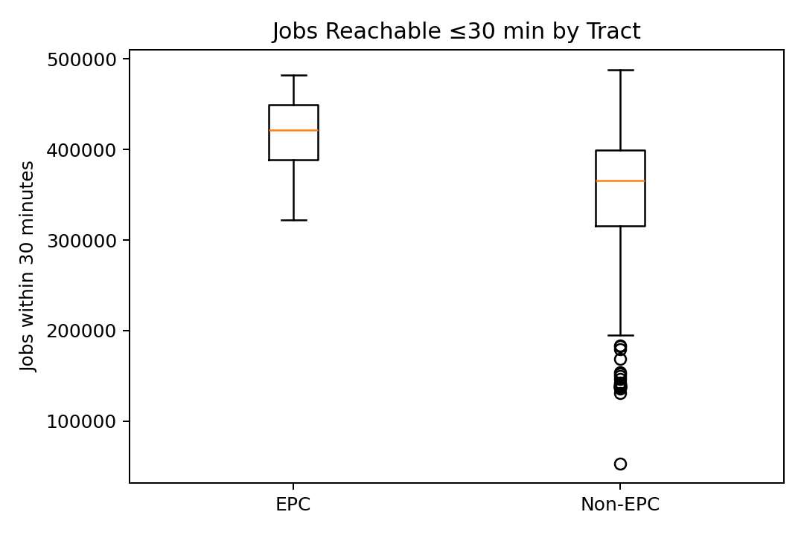
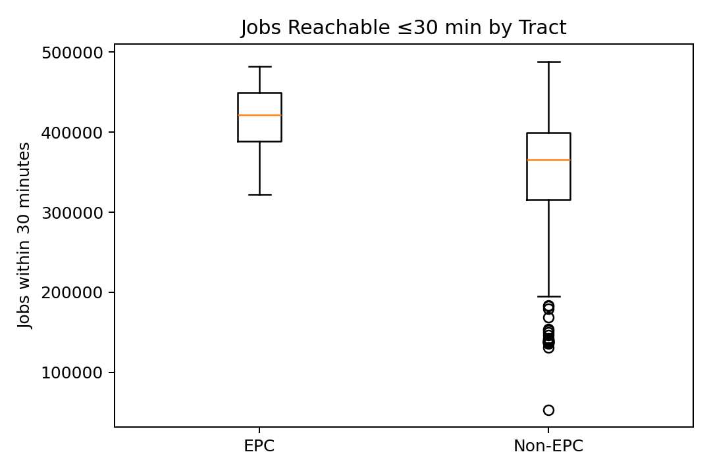

2. Objectives and Research Questions
The primary objective of this project is to evaluate transit accessibility in a way that reflects both spatial and
temporal equity. Specifically, the project aims to quantify how many jobs are reachable within specific t
The preliminary analysis revealed several important findings. On average, Equity Priority Community (EPC) tracts could reach
approximately 75,000 more jobs within 30 minutes than non-EPC tracts, representing roughly a
22 percent higher accessibility level. These tracts are concentrated along the western corridor of Alameda County—
spanning Berkeley, Oakland, and Hayward—where transit density and job opportunities are highest.
In contrast, eastern tracts near Livermore and Pleasanton show significantly lower accessibility because of both reduced
transit coverage and greater spatial separation from employment centers. The boxplot and bar chart visualizations confirm a consistent
accessibility gap between EPC and non-EPC groups. All datasets passed quality validation: there were no missing geometries, and
population and EPC flag values were properly merged.
The results suggest that while EPCs are often located closer to job centers, they still face challenges related to off-peak transit
frequency and schedule alignment. The current analysis, based on a static travel speed, captures spatial patterns but not temporal
variation. Once real GTFS data are integrated in the final phase, we expect to observe significant reductions in off-peak job access,
particularly in EPC tracts that depend on infrequent bus routes.
The work also highlights the value of open data and reproducible workflows in regional planning. Every step—from API data collection
to visualization—is scripted, enabling other students or agencies to replicate or extend the analysis.
Several limitations remain at the midterm stage. The current model assumes a constant average travel speed of 40 km/h,
which simplifies real-world transit variability. The accessibility metric is distance-based and does not yet account for walking,
waiting, or transfer times. Additionally, the analysis is limited to Alameda County, although the data architecture supports regional
scaling.
Future work will expand on these foundations by:
This midterm phase successfully built a clean, validated, and fully reproducible dataset for Alameda County and demonstrated clear
accessibility differences between EPC and non-EPC tracts. The integration of open data sources, transparent coding practices, and
visual storytelling establishes a strong technical foundation for the upcoming time-aware accessibility analysis.
By advancing from static to dynamic measures of transit equity, this work supports Plan Bay Area 2050 goals of fostering
inclusive, sustainable, and data-driven transportation planning across the region.
5. Results and Findings
6. Discussion
7. Limitations and Future Work
8. Conclusion
Interactive Maps
Static Results
 

Documentation
For detailed methodology, preprocessing, and data sources, read the Midterm Report (PDF).